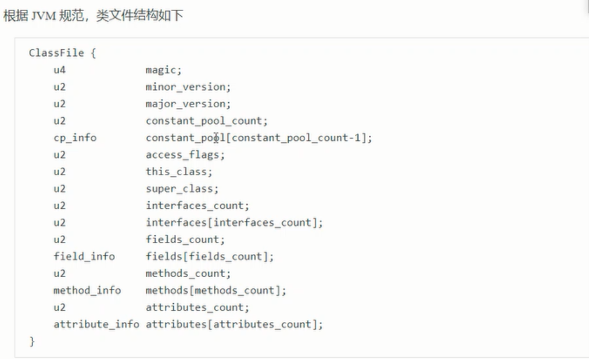

1、类文件结构
2、字节码指令
3、编译器处理
4、类加载阶段
5、运行期优化
一、类文件结构：

1.1魔数
1-3字节，表示它是否是【class】类型的文件
0000000 ca fe ba be 00 00 00 34 00 23 0a 00 06 00 15 09
1、2版本
4-7字节，表示类的版本 00 34（52），表示是Java8
0000000 ca fe ba be 00 00 00 34 00 23 0a 00 06 00 15 09
1、3常量池

8-9字节，表示常量池长度，00 23（35）表示常量池有#1-#34项，注意#0项不计入，也没有值
0000000 ca fe ba be 00 00 00 34 00 23 0a 00 06 00 15 09
第#1项 0a表示一个Method信息，00 06 和00 15（21）表示它引用了常量池中#22，和#23项来获得这个成员变量的【所属类】和【成员变量名】
0000000 ca fe ba be 00 00 00 34 00 23 0a 00 06 00 15 09
第#2项 09表示一个Field信息，00 16（22）和00 17（23）表示它引用了常量池中#22和#23项来获得这个成员变量的【所属类】和【成员变量名】
0000000 ca fe ba be 00 00 00 34 00 23 0a 00 06 00 15 09
0000020 00 16 00 17 08 00 18 0a 00 19 00 1a 07 00 1b 07
第#3项 08 表示一个字符串常量名称，00 18（24）表示它引用了常量池中#24项
0000020 00 16 00 17 08 00 18 0a 00 19 00 1a 07 00 1b 07


 1、4 访问标识与继承信息
1、4 访问标识与继承信息

1、5 Filed信息

1、6 Method信息


1、7 附加属性

二、字节码指令
1、入门
public cn.itcast.jvm.t5.HelloWorld();构造方法的字节码指令
2a b7 00 01 b1

public static void main(java.lang.String[]);主方法的字节码指令
b2 00 02 12 03 b6 00 04 b1

2、javap工具

3、图解方法执行流程

2）编译为字节码文件
数值没有超过int的最大数值就和字节码指令存储在一起；
超过int的最大数值就存储在运行时常量池。